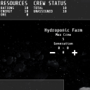
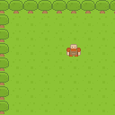
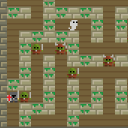
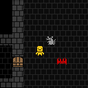

Space Resource Management Prototype
My first stab at prototyping a game idea out in Javascript and in general, since I was in school. A resource management style of game seemed like a good place to start learning as it boils down to "Numbers in Action". The long term intent was to add random events to shake up resource storage and generation and have the player cope with those challenges.
This project was written using Javascript.

Basic 2D JS Game Engine Prototype
An early attempt at using Typescript for game development / prototyping. I believe this was my first major foray into Typescript, and after this project I began to understand the benefits of using it.
This project was written using Typescript.

js13k 2015 Game
An abandoned entry to the 2015 js13k game jam.
The goals of the game jam each year are:
- to make a game for a given theme
- before the given deadline
- submitted in HTML / javascript format that can be simply opened in a browser
- all files for the game compresses into a standard zip file under 13kb in size
I got off to a good start with this, but had to give up on it due to time contraints.
I used a gulp workflow to auto the minification and zipping of the files as I worked.
This project was written using Typescript.

2D Graphical Rogue-lite Game Prototype
This project represents a major collection of learning experiences for me. To date I have implemented a number of concepts and features such as:
- tile maps
- a caved generation algorithm (still in source code, not currently used)
- a dungeon generation algorithm
- A* for enemy pathfinding
- limited ray tracing, used for player line of sight and vision in pseduo "fog of war"
- a few other minor features such a minimap and global text log
I hope to return to this project, or recreate it with lessons learned, when creativity strikes me again.
This project was written using Typescript.